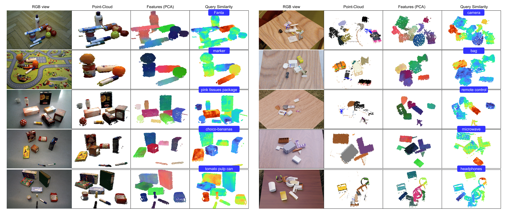

Qualitative Results

Effect of Object-Centric Priors (MV-TOD - 1/2)

Effect of Object-Centric Priors (MV-TOD - 2/2)
Semantic Segmentation (MV-TOD)
3D Instance Segmentation (MV-TOD -- without further training).

Generalization in unseen domains OCID (left) and REGRAD (right).